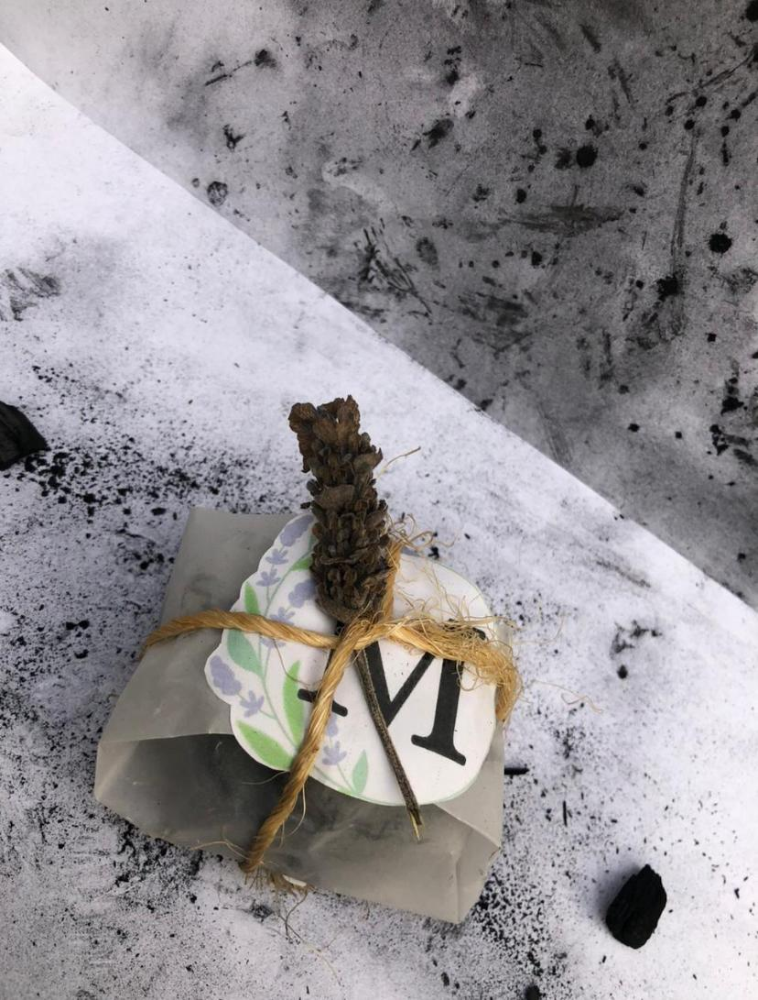
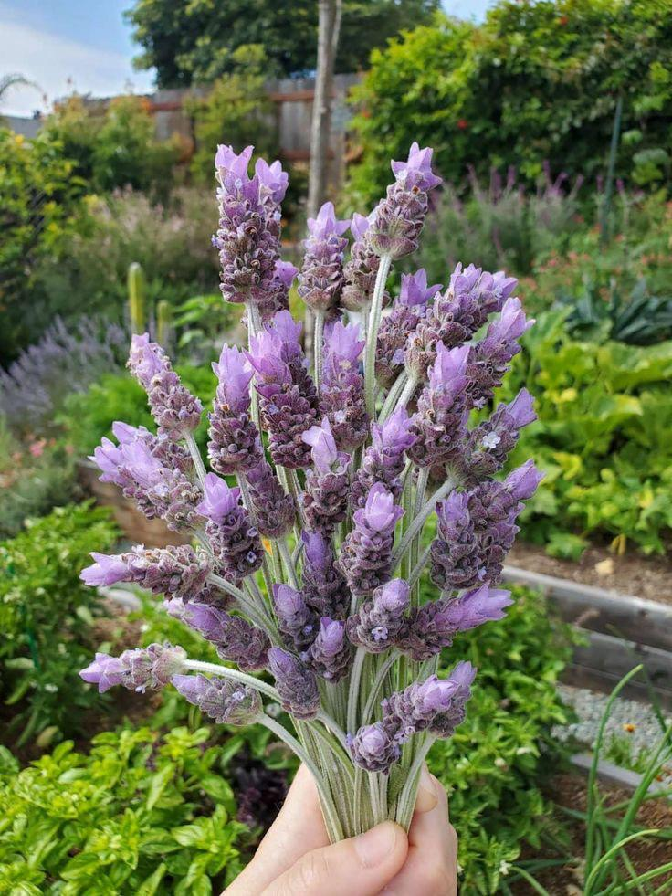

Empresa enfocada en el cuidado de la piel, así como el del medio ambiente,con la intención de mejorar un ambiente y cuidar la piel
La mejor fragancia para la mejor cara
El precio es de $100
OFERTA
En la compra de 2 el precio es de $170
INGREDIENTES
Lavanda
Menta
Glicerina
Carbon activado
CONTENIDOS
* Contiene taninos
* Alivia los transtornos nerviosos e incluso el insomnio
* Sirve para relajar e icluso dar una frescura en la piel
* Se emplea para elaborar productos cosméticos